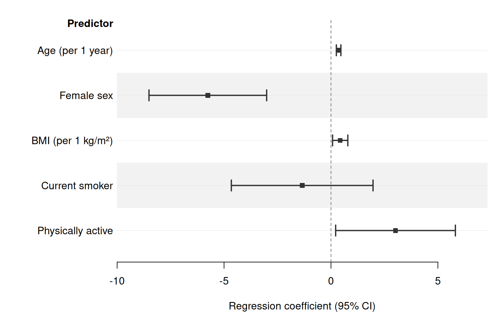
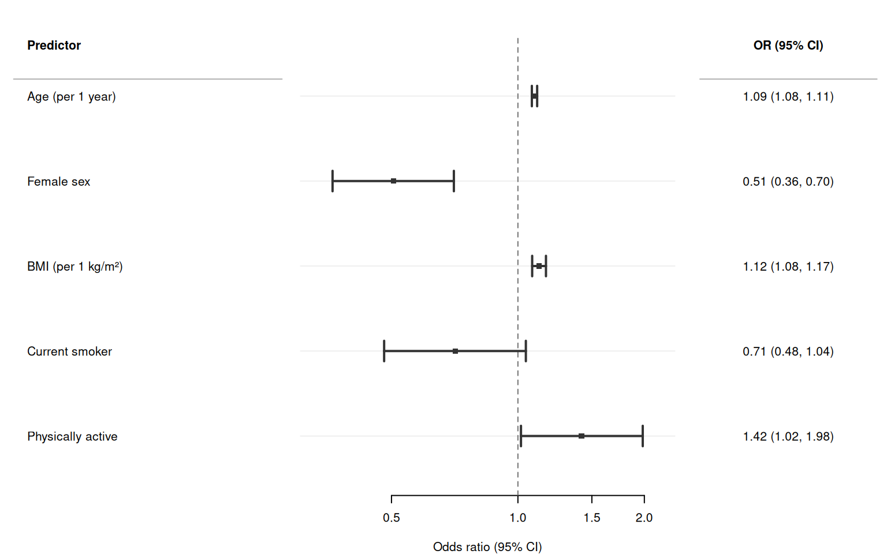
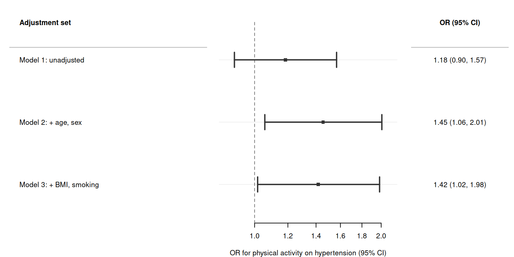
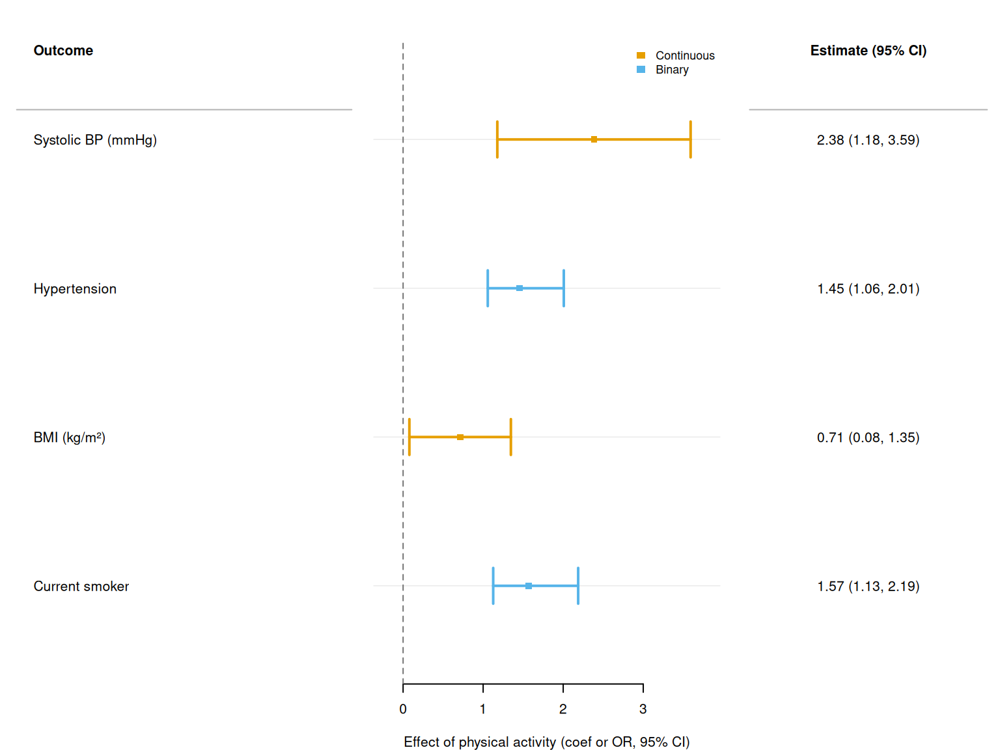
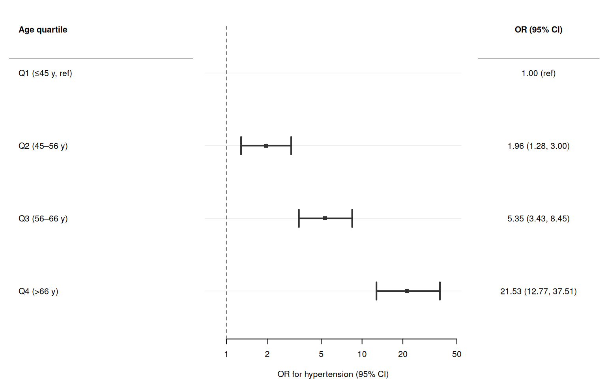
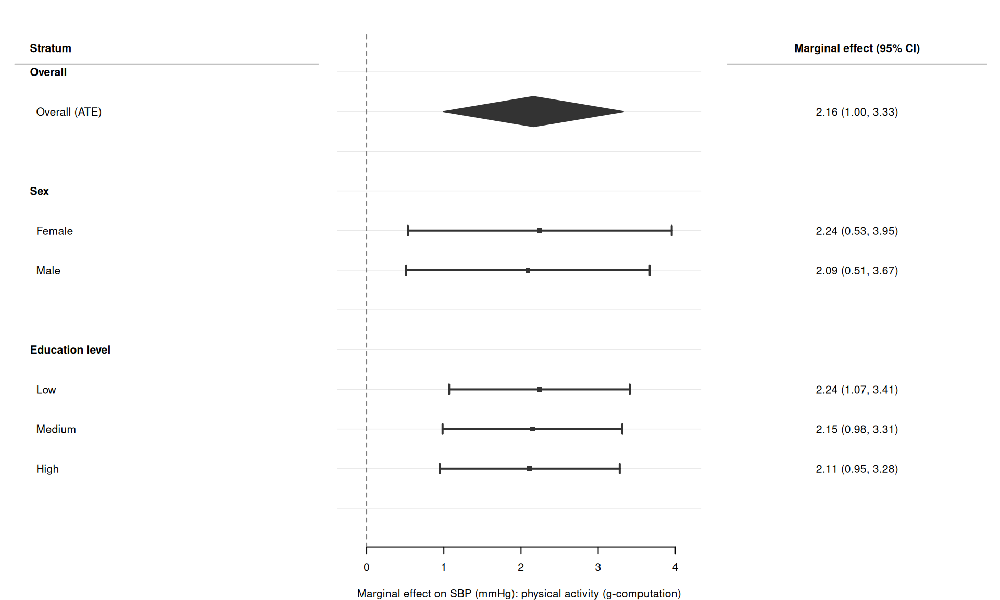
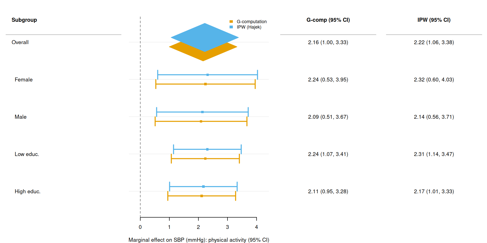

set.seed(42)
n <- 800
cohort <- data.frame(
age = round(runif(n, 30, 75)),
female = rbinom(n, 1, 0.52),
bmi = rnorm(n, 26, 4.5),
smoker = rbinom(n, 1, 0.20),
activity = rbinom(n, 1, 0.45), # 1 = physically active
educ = sample(c("Low", "Medium", "High"), n,
replace = TRUE, prob = c(0.25, 0.45, 0.30))
)
# Systolic blood pressure (mmHg): continuous outcome with true signal
cohort$sbp <- 110 +
0.40 * cohort$age -
4.50 * cohort$female +
0.50 * cohort$bmi -
2.00 * cohort$smoker +
2.50 * cohort$activity +
rnorm(n, sd = 8)
# Hypertension (SBP ≥ 140): binary outcome
cohort$htn <- as.integer(cohort$sbp >= 140)
# Education as ordered factor (for dose-response example)
cohort$educ <- factor(cohort$educ,
levels = c("Low", "Medium", "High"), ordered = FALSE)
cohort$educ <- relevel(cohort$educ, ref = "Low")Forest plots for regression models
Forest plots are not limited to meta-analyses. Any table of point estimates with confidence intervals can be displayed as a forest plot — results from regression models, dose-response analyses, multi-outcome studies, and more.
This vignette shows how to go from a fitted R model to a forest plot in a few lines of code. broom::tidy() extracts parameters; broom is not a hard dependency and may be replaced by any function that returns a data frame with the right columns. marginaleffects powers the causal-inference examples in the final sections.
Simulated cohort
Multiple predictors from one model
The simplest workflow: fit a model, call broom::tidy(conf.int = TRUE), and pass the result to forrest(). Column names estimate, conf.low, and conf.high map directly to the estimate, lower, and upper arguments.
fit_lm <- lm(sbp ~ age + female + bmi + smoker + activity, data = cohort)
coefs <- broom::tidy(fit_lm, conf.int = TRUE)
coefs <- coefs[coefs$term != "(Intercept)", ]
coefs$term <- c(
"Age (per 1 year)",
"Female sex",
"BMI (per 1 kg/m\u00b2)",
"Current smoker",
"Physically active"
)
# Formatted coefficient + CI text for right-hand column
coefs$coef_ci <- sprintf(
"%.2f (%.2f, %.2f)",
coefs$estimate, coefs$conf.low, coefs$conf.high
)
forrest(
coefs,
estimate = "estimate",
lower = "conf.low",
upper = "conf.high",
label = "term",
header = "Predictor",
cols = c("Coef (95% CI)" = "coef_ci"),
widths = c(3, 4, 2.5),
xlab = "Regression coefficient (95% CI)",
stripe = TRUE
)
For logistic regression, set exponentiate = TRUE in broom::tidy() to get odds ratios directly, then set log_scale = TRUE and ref_line = 1 in forrest():
fit_glm <- glm(htn ~ age + female + bmi + smoker + activity,
data = cohort, family = binomial)
or_coefs <- broom::tidy(fit_glm, conf.int = TRUE, exponentiate = TRUE)
or_coefs <- or_coefs[or_coefs$term != "(Intercept)", ]
or_coefs$term <- c(
"Age (per 1 year)",
"Female sex",
"BMI (per 1 kg/m\u00b2)",
"Current smoker",
"Physically active"
)
or_coefs$or_text <- sprintf(
"%.2f (%.2f, %.2f)",
or_coefs$estimate, or_coefs$conf.low, or_coefs$conf.high
)
forrest(
or_coefs,
estimate = "estimate",
lower = "conf.low",
upper = "conf.high",
label = "term",
log_scale = TRUE,
ref_line = 1,
header = "Predictor",
cols = c("OR (95% CI)" = "or_text"),
widths = c(3, 4, 2),
xlab = "Odds ratio (95% CI)"
)
Same predictor across progressive adjustment models
A common reporting pattern is to show how an association changes as covariates are progressively added.
m1 <- glm(htn ~ activity,
data = cohort, family = binomial)
m2 <- glm(htn ~ activity + age + female,
data = cohort, family = binomial)
m3 <- glm(htn ~ activity + age + female + bmi + smoker,
data = cohort, family = binomial)
extract_activity <- function(mod, label) {
row <- broom::tidy(mod, conf.int = TRUE, exponentiate = TRUE)
row <- row[row$term == "activity", ]
row$model <- label
row
}
adj_dat <- rbind(
extract_activity(m1, "Model 1: unadjusted"),
extract_activity(m2, "Model 2: + age, sex"),
extract_activity(m3, "Model 3: + BMI, smoking")
)
adj_dat$or_text <- sprintf(
"%.2f (%.2f, %.2f)",
adj_dat$estimate, adj_dat$conf.low, adj_dat$conf.high
)
forrest(
adj_dat,
estimate = "estimate",
lower = "conf.low",
upper = "conf.high",
label = "model",
log_scale = TRUE,
ref_line = 1,
header = "Adjustment set",
cols = c("OR (95% CI)" = "or_text"),
widths = c(4, 3.5, 2),
xlab = "OR for physical activity on hypertension (95% CI)"
)
Same predictor across multiple outcomes
To compare one exposure against several outcomes, loop over outcomes, extract the exposure row from each model, and stack into a single data frame. Use group to colour by outcome domain.
outcomes <- list(
list(var = "sbp", label = "Systolic BP (mmHg)", domain = "Continuous"),
list(var = "htn", label = "Hypertension", domain = "Binary"),
list(var = "bmi", label = "BMI (kg/m\u00b2)", domain = "Continuous"),
list(var = "smoker", label = "Current smoker", domain = "Binary")
)
rows <- lapply(outcomes, function(o) {
if (o$domain == "Continuous") {
fit <- lm(as.formula(paste(o$var, "~ activity + age + female")),
data = cohort)
r <- broom::tidy(fit, conf.int = TRUE)
} else {
fit <- glm(as.formula(paste(o$var, "~ activity + age + female")),
data = cohort, family = binomial)
r <- broom::tidy(fit, conf.int = TRUE, exponentiate = TRUE)
}
r <- r[r$term == "activity", ]
r$outcome <- o$label
r$domain <- o$domain
r
})
multi_out <- do.call(rbind, rows)
multi_out$est_text <- sprintf(
"%.2f (%.2f, %.2f)",
multi_out$estimate,
multi_out$conf.low,
multi_out$conf.high
)
forrest(
multi_out,
estimate = "estimate",
lower = "conf.low",
upper = "conf.high",
label = "outcome",
group = "domain",
ref_line = 0,
legend_pos = "topright",
header = "Outcome",
cols = c("Estimate (95% CI)" = "est_text"),
widths = c(3.5, 3.5, 2.5),
xlab = "Effect of physical activity (coef or OR, 95% CI)"
)
Note: because continuous and binary outcomes live on different scales, a single reference line may not be ideal for all rows. Consider splitting into two separate panels, or use
ref_line = NULL.
Dose-response (exposure categories)
For categorical exposures (quartiles, tertiles, etc.), the reference category has estimate = NA — no CI can be drawn for it. Supply a text column to print the reference label "1.00 (ref)".
# Quartiles of age
cohort$age_q <- cut(
cohort$age,
breaks = quantile(cohort$age, 0:4 / 4),
include.lowest = TRUE,
labels = c("Q1 (\u226445 y)", "Q2 (45\u201356 y)",
"Q3 (56\u201366 y)", "Q4 (>66 y)")
)
cohort$age_q <- relevel(cohort$age_q, ref = "Q1 (\u226445 y)")
fit_q <- glm(htn ~ age_q + female + bmi + smoker + activity,
data = cohort, family = binomial)
q_coefs <- broom::tidy(fit_q, conf.int = TRUE, exponentiate = TRUE)
q_coefs <- q_coefs[grep("^age_q", q_coefs$term), ]
q_plot <- rbind(
data.frame(
label = "Q1 (\u226445 y, ref)",
estimate = NA_real_,
conf.low = NA_real_,
conf.high = NA_real_,
or_ci = "1.00 (ref)",
is_sum = FALSE
),
data.frame(
label = gsub("^age_q", "", q_coefs$term),
estimate = q_coefs$estimate,
conf.low = q_coefs$conf.low,
conf.high = q_coefs$conf.high,
or_ci = sprintf("%.2f (%.2f, %.2f)",
q_coefs$estimate,
q_coefs$conf.low,
q_coefs$conf.high),
is_sum = FALSE
)
)
forrest(
q_plot,
estimate = "estimate",
lower = "conf.low",
upper = "conf.high",
label = "label",
is_summary = "is_sum",
log_scale = TRUE,
ref_line = 1,
header = "Age quartile",
cols = c("OR (95% CI)" = "or_ci"),
widths = c(3, 4, 2),
xlab = "OR for hypertension (95% CI)"
)
Marginal effects: g-computation
Parametric g-computation estimates the average treatment effect (ATE) by predicting outcomes under two counterfactual worlds — everyone treated vs. no one treated — and averaging the difference. marginaleffects::avg_comparisons() implements this in one line.
The example below estimates the marginal effect of physical activity on SBP, overall and stratified by sex and education level.
library(marginaleffects)
# Outcome model with treatment × covariate interactions so that
# g-computation captures heterogeneous treatment effects
fit_sbp <- lm(
sbp ~ activity * (age + female + bmi + smoker),
data = cohort
)
# Helper: extract one avg_comparisons result into a plot row
make_row <- function(me, label, is_sum = FALSE) {
data.frame(
label = label,
estimate = me$estimate,
lower = me$conf.low,
upper = me$conf.high,
is_sum = is_sum
)
}
# Overall ATE
ate_sbp <- avg_comparisons(fit_sbp, variables = "activity")
# ATE by sex: subset newdata to each stratum
sex_rows <- lapply(
list(` Female` = 0, ` Male` = 1),
function(f) avg_comparisons(fit_sbp, variables = "activity",
newdata = subset(cohort, female == f))
)
# ATE by education level
educ_rows <- setNames(
lapply(c("Low", "Medium", "High"), function(e)
avg_comparisons(fit_sbp, variables = "activity",
newdata = subset(cohort, educ == e))),
c(" Low", " Medium", " High")
)
# Stack into a single data frame, using blank/header rows as section dividers
gcomp_dat <- rbind(
make_row(ate_sbp, "Overall (ATE)", is_sum = TRUE),
data.frame(label = "Sex", estimate = NA, lower = NA,
upper = NA, is_sum = FALSE),
make_row(sex_rows[[" Female"]], " Female"),
make_row(sex_rows[[" Male"]], " Male"),
data.frame(label = "", estimate = NA, lower = NA,
upper = NA, is_sum = FALSE),
data.frame(label = "Education level", estimate = NA, lower = NA,
upper = NA, is_sum = FALSE),
make_row(educ_rows[[" Low"]], " Low"),
make_row(educ_rows[[" Medium"]], " Medium"),
make_row(educ_rows[[" High"]], " High")
)
gcomp_dat$est_text <- ifelse(
is.na(gcomp_dat$estimate), "",
sprintf("%.2f (%.2f, %.2f)",
gcomp_dat$estimate, gcomp_dat$lower, gcomp_dat$upper)
)
forrest(
gcomp_dat,
estimate = "estimate",
lower = "lower",
upper = "upper",
label = "label",
is_summary = "is_sum",
cols = c("Marginal effect (95% CI)" = "est_text"),
widths = c(3.5, 4, 3),
ref_line = 0,
header = "Stratum",
xlab = "Marginal effect on SBP (mmHg): physical activity (g-computation)"
)
Marginal effects: inverse probability weighting (IPW)
IPW re-weights observations by the inverse of their propensity score so that the weighted sample resembles a randomised trial with respect to observed confounders. The example below uses marginaleffects to implement the Hajek estimator and compares it to g-computation for five strata (overall + sex + education). Using group and dodge, both sets of estimates are displayed side-by-side in one figure.
# ── Step 1: propensity score model ────────────────────────────────────────
ps_mod <- glm(activity ~ age + female + bmi + smoker + educ,
data = cohort, family = binomial)
cohort$ps <- predict(ps_mod, type = "response")
cohort$ipw <- ifelse(cohort$activity == 1,
1 / cohort$ps,
1 / (1 - cohort$ps))
# Trim extreme weights at the 1st / 99th percentile for numerical stability
cohort$ipw_t <- pmin(pmax(cohort$ipw,
quantile(cohort$ipw, 0.01)),
quantile(cohort$ipw, 0.99))
# ── Step 2: IPW-weighted outcome model ────────────────────────────────────
fit_sbp_ipw <- lm(
sbp ~ activity * (age + female + bmi + smoker),
data = cohort, weights = ipw_t
)
# ── Step 3: build comparison rows — no header rows, just labelled strata ──
# Each stratum appears twice: once for each method. The dodge layout
# places the two symbols side-by-side so CIs can be read off the same axis.
strata <- list(
list(label = "Overall", nd = cohort, is_sum = TRUE),
list(label = " Female", nd = subset(cohort, female == 0), is_sum = FALSE),
list(label = " Male", nd = subset(cohort, female == 1), is_sum = FALSE),
list(label = " Low educ.", nd = subset(cohort, educ == "Low"), is_sum = FALSE),
list(label = " High educ.", nd = subset(cohort, educ == "High"),is_sum = FALSE)
)
rows <- do.call(rbind, lapply(strata, function(s) {
# G-computation: standard avg_comparisons on the interaction model
gc <- avg_comparisons(fit_sbp, variables = "activity",
vcov = "HC3", newdata = s$nd)
# IPW (Hajek): pass trimmed weights via the `wts` argument
ipw <- avg_comparisons(fit_sbp_ipw, variables = "activity",
wts = "ipw_t", vcov = "HC3", newdata = s$nd)
rbind(
data.frame(label = s$label, method = "G-computation",
estimate = gc$estimate, lower = gc$conf.low,
upper = gc$conf.high, is_sum = s$is_sum),
data.frame(label = s$label, method = "IPW (Hajek)",
estimate = ipw$estimate, lower = ipw$conf.low,
upper = ipw$conf.high, is_sum = s$is_sum)
)
}))
#> Warning: Unable to extract a variance-covariance matrix using this `vcov`
#> argument. Standard errors are computed using the default variance instead.
#> Perhaps the model or argument is not supported by the `sandwich` ('HC0', 'HC3',
#> ~clusterid, etc.) or `clubSandwich` ('CR0', etc.) packages. If you believe that
#> the model is supported by one of these two packages, you can open a feature
#> request on Github.
#> Warning: Unable to extract a variance-covariance matrix using this `vcov`
#> argument. Standard errors are computed using the default variance instead.
#> Perhaps the model or argument is not supported by the `sandwich` ('HC0', 'HC3',
#> ~clusterid, etc.) or `clubSandwich` ('CR0', etc.) packages. If you believe that
#> the model is supported by one of these two packages, you can open a feature
#> request on Github.
#> Warning: Unable to extract a variance-covariance matrix using this `vcov`
#> argument. Standard errors are computed using the default variance instead.
#> Perhaps the model or argument is not supported by the `sandwich` ('HC0', 'HC3',
#> ~clusterid, etc.) or `clubSandwich` ('CR0', etc.) packages. If you believe that
#> the model is supported by one of these two packages, you can open a feature
#> request on Github.
#> Warning: Unable to extract a variance-covariance matrix using this `vcov`
#> argument. Standard errors are computed using the default variance instead.
#> Perhaps the model or argument is not supported by the `sandwich` ('HC0', 'HC3',
#> ~clusterid, etc.) or `clubSandwich` ('CR0', etc.) packages. If you believe that
#> the model is supported by one of these two packages, you can open a feature
#> request on Github.
#> Warning: Unable to extract a variance-covariance matrix using this `vcov`
#> argument. Standard errors are computed using the default variance instead.
#> Perhaps the model or argument is not supported by the `sandwich` ('HC0', 'HC3',
#> ~clusterid, etc.) or `clubSandwich` ('CR0', etc.) packages. If you believe that
#> the model is supported by one of these two packages, you can open a feature
#> request on Github.
#> Warning: Unable to extract a variance-covariance matrix using this `vcov`
#> argument. Standard errors are computed using the default variance instead.
#> Perhaps the model or argument is not supported by the `sandwich` ('HC0', 'HC3',
#> ~clusterid, etc.) or `clubSandwich` ('CR0', etc.) packages. If you believe that
#> the model is supported by one of these two packages, you can open a feature
#> request on Github.
#> Warning: Unable to extract a variance-covariance matrix using this `vcov`
#> argument. Standard errors are computed using the default variance instead.
#> Perhaps the model or argument is not supported by the `sandwich` ('HC0', 'HC3',
#> ~clusterid, etc.) or `clubSandwich` ('CR0', etc.) packages. If you believe that
#> the model is supported by one of these two packages, you can open a feature
#> request on Github.
#> Warning: Unable to extract a variance-covariance matrix using this `vcov`
#> argument. Standard errors are computed using the default variance instead.
#> Perhaps the model or argument is not supported by the `sandwich` ('HC0', 'HC3',
#> ~clusterid, etc.) or `clubSandwich` ('CR0', etc.) packages. If you believe that
#> the model is supported by one of these two packages, you can open a feature
#> request on Github.
#> Warning: Unable to extract a variance-covariance matrix using this `vcov`
#> argument. Standard errors are computed using the default variance instead.
#> Perhaps the model or argument is not supported by the `sandwich` ('HC0', 'HC3',
#> ~clusterid, etc.) or `clubSandwich` ('CR0', etc.) packages. If you believe that
#> the model is supported by one of these two packages, you can open a feature
#> request on Github.
#> Warning: Unable to extract a variance-covariance matrix using this `vcov`
#> argument. Standard errors are computed using the default variance instead.
#> Perhaps the model or argument is not supported by the `sandwich` ('HC0', 'HC3',
#> ~clusterid, etc.) or `clubSandwich` ('CR0', etc.) packages. If you believe that
#> the model is supported by one of these two packages, you can open a feature
#> request on Github.
# Separate text columns per method for cols_by_group display
rows$text_gc <- ifelse(rows$method == "G-computation",
sprintf("%.2f (%.2f, %.2f)",
rows$estimate, rows$lower, rows$upper), "")
rows$text_ipw <- ifelse(rows$method == "IPW (Hajek)",
sprintf("%.2f (%.2f, %.2f)",
rows$estimate, rows$lower, rows$upper), "")
forrest(
rows,
estimate = "estimate",
lower = "lower",
upper = "upper",
label = "label",
group = "method",
is_summary = "is_sum",
dodge = TRUE,
cols_by_group = TRUE,
cols = c("G-comp (95% CI)" = "text_gc",
"IPW (95% CI)" = "text_ipw"),
widths = c(3, 3.5, 2.5, 2.5),
ref_line = 0,
legend_pos = "topright",
header = "Subgroup",
xlab = "Marginal effect on SBP (mmHg): physical activity (95% CI)"
)
Saving plots
save_forrest(
file = "regression_forest.pdf",
plot = function() {
forrest(
coefs,
estimate = "estimate",
lower = "conf.low",
upper = "conf.high",
label = "term",
stripe = TRUE,
xlab = "Regression coefficient (95% CI)"
)
},
width = 9,
height = 5
)